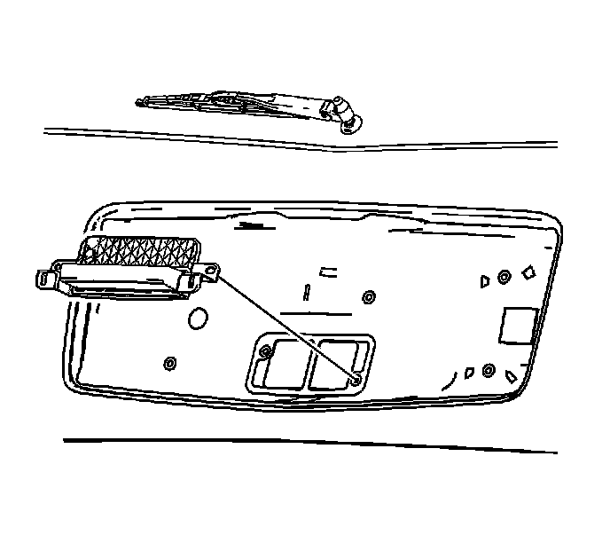

Trunk / Liftgate Handle: Service and Repair
Liftgate Outside Handle Replacement
Removal Procedure

1. Remove the liftgate applique. Refer to Liftgate Applique Replacement () .
2. Remove the nuts retaining the handle to the liftgate.
3. Remove the handle from the liftgate.
4. Disconnect the latch actuator cable from the handle.
5. Remove the liftgate handle.
Installation Procedure
1. Connect the latch actuator cable to the handle.
2. Install the liftgate handle to the liftgate.
3. Install the nuts that retain the handle to the liftgate.
Important: Do not tighten the nuts yet.
4. Install the liftgate applique. Refer to Liftgate Applique Replacement () .
5. Center the handle in the opening in the liftgate applique.
Notice: Refer to Fastener Notice (Fastener Notice) .
6. Tighten the nuts retaining the liftgate handle to the liftgate.
Tighten the nuts to 8 N.m (71 lb in).